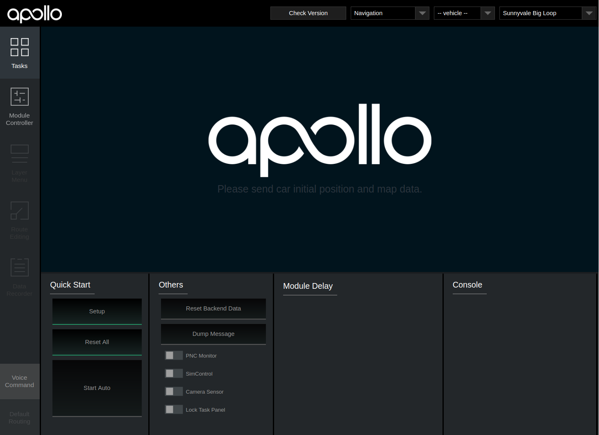
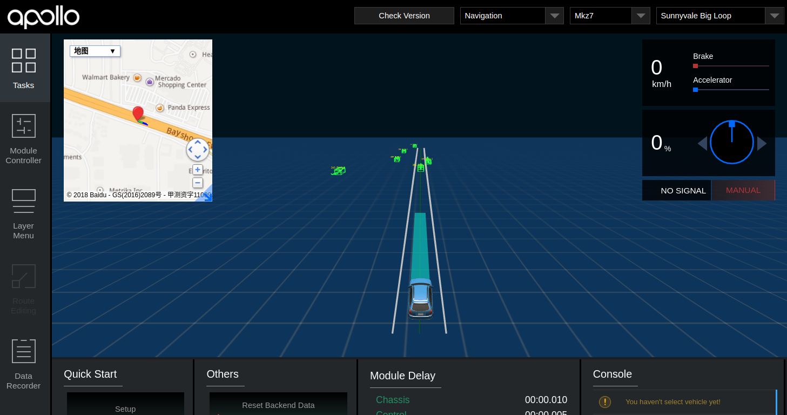

How to Launch and Run Apollo
First check and make sure you are in development docker container before you proceed. Now you will need to build from the source. If you want to run the entire system, make sure you have an nVidia GPU and that you have installed the Linux nVidia drivers. You could still proceed with the next few steps even if you are missing the Linux nVidia drivers, as the system will run but with the CUDA-based perception and other modules.
# To get a list of build commands
./apollo.sh
# To make sure you start clean
./apollo.sh clean
# This will build the full system and requires that you have an nVidia GPU with nVidia drivers loaded
bash apollo.sh build
If you do not have an nVidia GPU, the system will run but with the CUDA-based perception and other modules. You must
specify either dbg for debug mode or opt for optimized code
./apollo.sh build_no_perception dbg
If you make modifications to the Dreamview frontend, then you must run ./apollo.sh build_fe before you run the
full build.
If the computer is very slow, you can enter the following command to limit the CPU.
bash apollo.sh build --local_resources 2048,1.0,1.0
Run Apollo
Follow the steps below to launch Apollo. Note that you must build the system first before you run it. Note that the bootstrap.sh will actually succeed but the user interface will not come up if you skip the build step.
Start Apollo
Running Apollo will start the ROS core and then startup a web user interface called Dreamview, this is handled by the bootstrap script, so from within the docker container, you should run:
# start module monitor
bash scripts/bootstrap.sh
Access Dreamview
Access Dreamview by opening your favorite browser, e.g. Chrome, go to http://localhost:8888 and you should see this screen However, there will be nothing running in the system.

Select Drive Mode
From the dropdown box selet "Navigation" mode.

Replay demo record
To see if the system works, use the demo 'record' which feeds the system.
# You need to download the demo record using the following commands
cd docs/demo_guide/
python3 rosbag_helper.py demo_3.5.record
# You can now replay this demo "record" in a loop with the '-l' flag
cyber_recorder play -f docs/demo_guide/demo_3.5.record -l
Dreamview should show a running vehicle now. (The following image might be different due to changes in frontend.)

Congratulations! You have successfully built out Apollo!! If you do have the necessary Hardware setup, please go back to our Readme for additional guidelines.